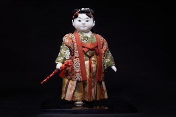

Wakadono là tác phẩm thuộc dòng Gogatsu Ningyō – dòng búp bê truyền thống được trưng bày trong Lễ hội Bé trai (Tango no Sekku) vào ngày 5 tháng 5, nay là Ngày Thiếu nhi của Nhật Bản. Những búp bê này được các gia đình trưng bày với mong muốn cầu chúc các bé trai lớn lên khỏe mạnh, dũng cảm và thành công trong tương lai.
Tác phẩm khắc họa hình ảnh một thiếu chủ samurai trong bộ lễ phục truyền thống với hoa văn tinh xảo, tay cầm kiếm ngắn – biểu tượng của tinh thần võ sĩ. Khuôn mặt bầu bĩnh của trẻ thơ kết hợp với tư thế trang nghiêm tạo nên sự hài hòa giữa nét hồn nhiên và phẩm chất kiên cường mà người Nhật luôn mong muốn vun đắp cho thế hệ sau.
Trong văn hóa Nhật Bản, Wakadono tượng trưng cho lòng dũng cảm, sự chính trực, trí tuệ và tinh thần vượt khó. Tác phẩm không chỉ phản ánh truyền thống giáo dục của các gia đình Nhật Bản mà còn thể hiện ước nguyện về một tương lai tươi sáng dành cho trẻ em. Với kỹ thuật chế tác thủ công tinh xảo, Wakadono là biểu tượng đẹp của tình yêu thương gia đình và những giá trị văn hóa được gìn giữ qua nhiều thế hệ.
若殿は五月人形の作品です。五月人形は、5月5日の端午の節句（現在の「こどもの日」）に飾られる伝統人形で、男の子が健やかに、勇敢に育ち、将来成功するようにとの願いを込めて各家庭で飾られてきました。
本作は、精巧な文様の伝統的な礼装をまとい、武士の精神の象徴である短刀を手にした武家の若君の姿を表しています。子どもらしいふっくらとした顔と凛とした姿勢が、日本人が次の世代に育みたいと願う無邪気さとたくましさの調和を生み出しています。
日本文化において若殿は、勇気、誠実さ、知恵、そして困難に立ち向かう精神を象徴します。本作は日本の家庭における子育ての伝統を映し出すとともに、子どもたちの明るい未来への願いを表しています。精巧な手仕事による若殿は、家族の愛情と、世代を超えて受け継がれてきた文化的価値の美しい象徴です。